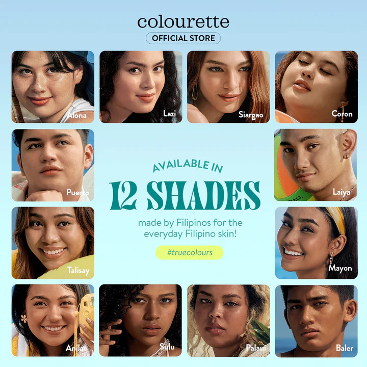

First Base Everyday Skin Tint
₱599.00
Everyday Skin Tint · demi-matte finish · 30ml
First Base is a demi-matte lightweight skin tint with a light to
medium coverage to match your #TrueColours.
This fragrance free, cruelty-free, and vegan formula is
dermatologically tested and non-comedogenic. Packed with broad
spectrum SPF 30 and powerful active ingredients including Azelaic
Acid, Hyaluronic Acid, and Niacinamide to bare your skin but better
any day, everyday.
First Base is now available in
12 shades mindfully curated for the everyday Filipino skin
Light:
- Alona is a Light with Warm Yellow Undertone
- Lazi is a Light with Neutral Undertone
- Siargao is a Light with Warm Neutral Undertone
- Coron is a Light with Neutral Olive Undertone
Medium:
- Puerto is a Medium with Neutral Undertone
- Talisay is a Medium with Olive Undertone
- Laiya is a Medium with Warm Undertone
- Mayon is a Medium Tan with Neutral Undertone
- Anilao is a Medium Tan with Warm Undertone
Deep:
- Sulu is a Medium Deep with Olive Undertone
- Palaui is a Medium Deep with Neutral Undertone
- Baler is a Deep with Golden Undertone